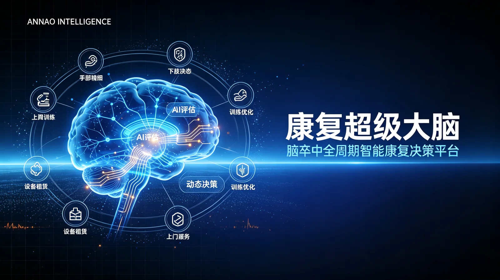
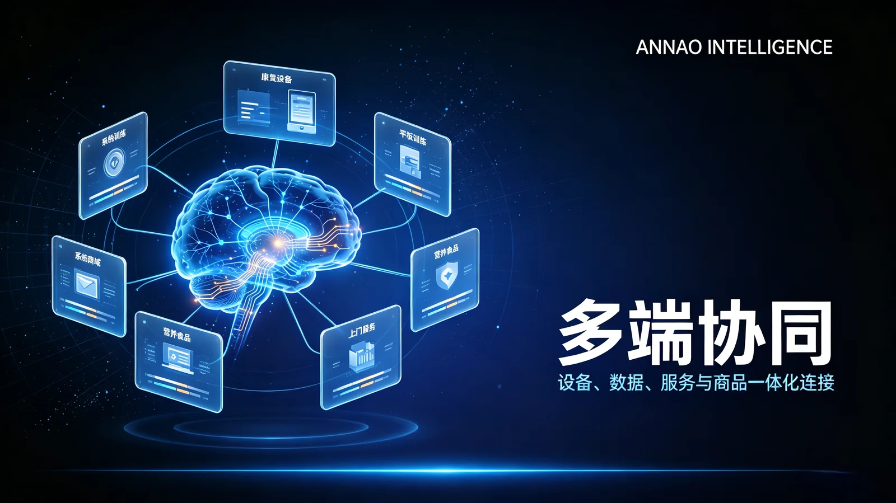

02 / 05 PURPOSE-BUILT TECHNOLOGY
底层技术，
连接康复全程。
以 AI 视觉、游戏交互与专业知识，构建全周期康复管理的技术平台。
02 / 05让感知、训练与专业知识协同。RA-FM / EDT-LLM / DATA SECURITY
场景概念示意01 / AI VISUAL ASSESSMENT
RA-FM 评估大模型
以摄像头采集的动作信息为起点，结合姿态估计与评分模型，将训练过程转化为可追踪的记录，为专业评估提供辅助信息。
- 全身关键点追踪与动作识别
- 上肢、下肢和平衡动作的评估场景
- 端云协同的推理架构
- 评估结果结合专业人员判断使用
 场景概念示意
场景概念示意02 / MOVEMENT INTO MOTIVATION
游戏化训练引擎
将康复动作映射为游戏交互，通过即时反馈、难度调节与阶段性目标，为持续训练提供更易理解的体验。
- 动作与游戏操作映射
- 即时反馈与动作提示
- 按训练计划与表现调整难度
- 训练进度与阶段性成就记录
 场景概念示意
场景概念示意03 / EXPERTISE, CONNECTED
EDT-LLM 专家数字分身
结合医疗大模型、授权知识库与检索增强生成，为日常康复知识问答和训练提醒提供辅助，并为需要专业判断的问题设置人工衔接。
- 基于授权知识的康复内容检索
- 训练指导信息与日常注意事项
- 问题边界提示与人工衔接
- 问答过程记录与可追溯设计

场景概念示意04 / TRUST BY DESIGN
数据安全与隐私保护
以最小必要信息、明确授权与分级访问为设计原则，围绕数据传输、存储、使用和追踪建立保护机制。
- 数据传输与存储的加密设计
- 患者授权与角色权限管理
- 访问记录与操作审计
- 部署前确认适用规范及合规要求
一起，连接康复的更多可能。
从一次交流开始，找到适合您的产品与合作方式。